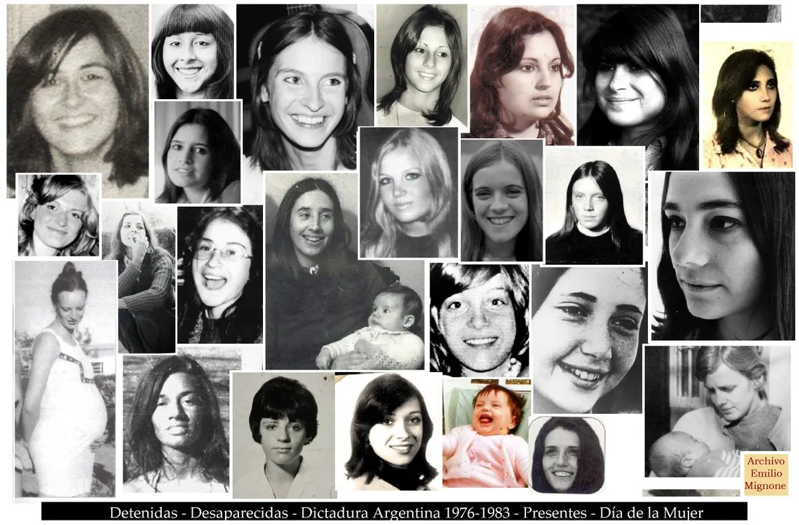

Un 30% de las víctimas del terrorismo de Estado ejercido por la dictadura cívico militar instaurada en Argentina a partir del 24 de marzo de 1976 fueron mujeres, según los datos recabados por la CONADEP. La violencia sistemática sufrida por las mujeres en los centros clandestinos de detención de aquellos años fue específica, sistemática y planificada, tuvo claras intenciones, partió de estereotipos de género, y los profundizó en nuestra sociedad. Los delitos contra la integridad sexual de las víctimas cometidos por los represores no fueron considerados partes del plan sistemático contra la población, en el marco de la persecución política e ideológica desatada en esos años, si no como hechos aislados. Recién en 2010, la violencia sexual, en este contexto, fue tratada como delito de lesa humanidad.
“Un estereotipo es una visión generalizada o una preconcepción sobre los atributos o características de los
miembros de un grupo en particular o sobre los roles que tales miembros deben cumplir”
Los estereotipos de género actúan reproduciendo la asimetría estructural existente entre hombres y mujeres,
que tiene su origen en el sistema patriarcal imperante en nuestro país, que parte de una tajante diferencia entre el
espacio público y el privado, y en la adjudicación de un rol secundario para la mujer, relegada siempre a este
último y, por ende, subordinada al hombre. Desde esta jerarquización asimétrica de los roles, se desprenden las
distintas formas de subordinación y discriminación, y como lógica consecuencia la violencia contra las mujeres.
El terrorismo de Estado se propuso garantizar un capitalismo patriarcal y para ello agudizó los estereotipos ya
existentes en nuestra sociedad. Ante el incipiente nuevo modelo femenino que surgía tímidamente en nuestro país
en las décadas del 60 y 70, postulando el trabajo remunerado como realización personal de la mujer, la
aceptación de la sexualidad femenina pre matrimonial y la desacreditación de la condición de ama de casa, el
terrorismo de Estado propuso un regreso a los valores tradicionales. Para ello profundizó el rol de la mujer de
ama de casa, madre y esposa, remarcándose su función reproductiva, doméstica y de cuidado.
Históricamente el sistema judicial argentino consideró de poca importancia la investigación de delitos sexuales,
lo que demuestra la discriminación por género existente, si consideramos que la mayoría de las víctimas son
mujeres. Conclusión aplicable también a la investigación de violencia sexual denunciada en causas de lesa
humanidad.
En general al prestar declaración testimonial no se les preguntó a las víctimas si existió violencia sexual,
cosa
que si se hizo respecto de otros delitos (robos, torturas, ingresos violentos a sus domicilios, etc). En los
procesos penales en que las víctimas declararon haber padecido agresiones sexuales, estas denuncias fueron
efectuadas de manera espontánea por quienes las sufrieron. Sin embargo este accionar quedó subsumido en la
figura de
tormentos o tortura.
Sin dudas, la falta de investigación y de castigo a los responsables directos e indirectos de la violencia
sexual
perpetrada contra las mujeres en el marco del terrorismo de Estado facilita y legitima la reproducción de la
violencia y de los estereotipos que la generan desde entonces y hasta la actualidad.
Resulta lamentable la historia oficial de nuestro país que ha pretendido adormecer la memoria colectiva. Pero no lo ha logrado, no ha podido impedir que la otra historia fuese conocida, denunciada y gritada. Es la historia escrita por las víctimas, por los sobrevivientes, por sus familiares, por el pueblo.Es la historia que todavía continúa y que no va a cesar hasta que haya justicia.
Para mas información detallada Ingrese a este link
